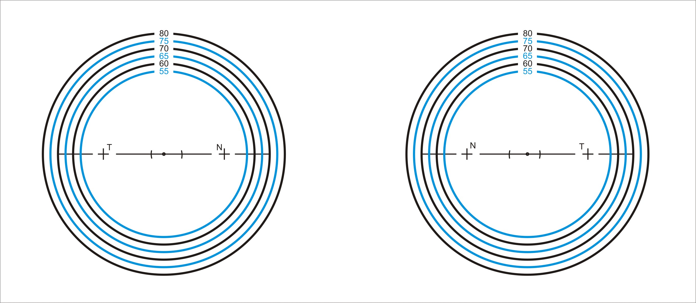

Рекомендации по установке линзы "Perifocal" в оправу.
Выбор оправы и разметка на демо-линзы для изготовления очков с линзой «Perifocal»
Характеристики оправы.
Для установки линзы «Perifocal» можно использовать любую медицинскую оправу, но наиболее приемлемой является оправа с регулируемыми носоупорами и заушниками. Менее предпочтительна оправа на винтовых держателях линзы.
Посадка и разметка.
Желательно, чтобы посадка оправы обеспечивала соотношение проекции зрачка глаза с проекцией средней трети светового проема оправы. Разметка на демо-линзе осуществляется при помощи фломастера, когда на демо-линзы оправы наносятся точки соответствующие центрам зрачков клиента при взгляде прямо, причем, важно убедиться, что оправа комфортно зафиксирована во всех контактных точках.
Изготовление очков с линзой «Perifocal» производится мастером-оптиком с учетом разметки оптического центра, главных меридианов и обозначений носовой и височной сторон графически представленной на линзе.
Прочие рекомендации по установке линз Perifocal.
Линзы требуют установки в оправу, согласно заранее отмеченного центра зрачка (аналогично с прогрессивными линзами: с обязательным учетом как горизонтальной, так и вертикальной асимметрии). При установке важно проследить за соблюдением горизонтальной линии и, соответственно, если линза имеет астигматический компонент, чтобы оси горизонтали и цилиндра были согласованы. Отклонение в согласованности допускается, но не приветствуется. Приоритетной является ось цилиндра (если существует разобщенность осей), при этом отклонение не должно превышать 5 градусов от оси, указанной в рецепте.
Линза оснащена особой маркировкой, такой как на представленной карте

Для удобства подбора оправы и определения диаметра необходимой заготовки рекомендуется использовать разметочную карту. При этом, в идеале (но не обязательно) перекрестия возле букв “T” и “N” помещаются в световой проем оправы.
Размер светового проема должен быть более 12 мм по вертикали и более чем 35 мм по горизонтали. После разметки оправы следует убедиться, что от точки, соответствующей центру зрачка, как минимум, 5 мм до верхней границы светового проема и прибл. 12-14 мм или более от точки до края светового проема у переносицы (см. рисунок ниже).

В случае если маркировка удалена или не читаема, следует ориентироваться по гравировке на линзе. Оптический центр в данном случае будет находиться ровно между выгравированных окружностей. Также на гравировке можно увидеть значение рефракции прогрессирующей и/или дегрессирующей в противоположных направлениях, относительно оптического центра по горизонтали.
Линзы “Perifocal” имеют ориентацию (правая и левая), что обязательно нужно учитывать при составлении рецепта и установке линз в оправу.